얼음, 물, 수증기 — 같은 물질이지만 다른 모습! 오늘은 물질의 상태가 변하는 다양한 현상을 직접 관찰해 봐요.
상온에서 다음 설명에 해당하는 상태로 존재하는 물질을 골라 ○로 표시해 보자.
| 암석 | 식초 | 산소 | |
|---|---|---|---|
| 담는 용기에 따라 모양이 달라진다. | |||
| 압력을 가해도 부피가 거의 변하지 않는다. |
교과서 124쪽
교과서 124쪽
얼린 망고에 초콜릿을 입혔더니, 겉면의 초콜릿이
매끈하게 굳었어요. 초콜릿의 상태는 어떻게 변한 것일까?
교과서 124쪽
얼음이 녹으면 물이 되고, 물이 증발하면 수증기가 되는 것처럼 물질의 상태가 변하는 것을 상태 변화 (이)라고 한다. (클릭해서 정답 확인)
교과서 124쪽
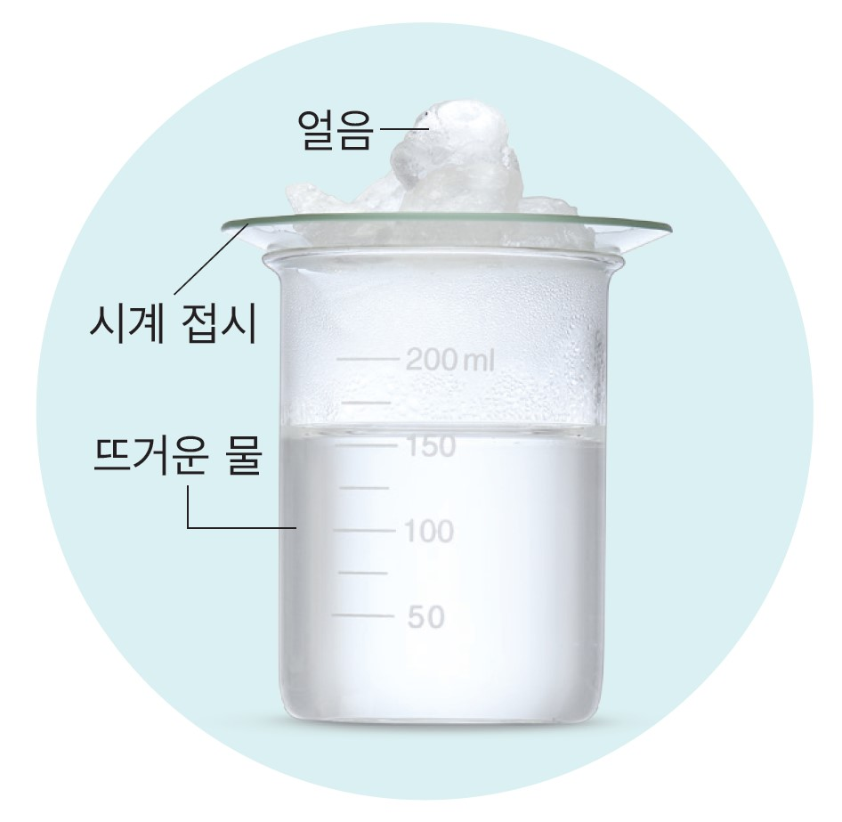
뜨거운 물이 들어 있는 비커 위에 얼음이 담긴 시계 접시를 올려놓고, 변화를 관찰해 보자.
Q. 시계 접시 윗면과 아랫면에서는 어떤 변화가 일어나는가?
시계 접시 윗면에서는 얼음이 녹아 물이 되고, 아랫면에서는 액체 방울이 맺힌다.
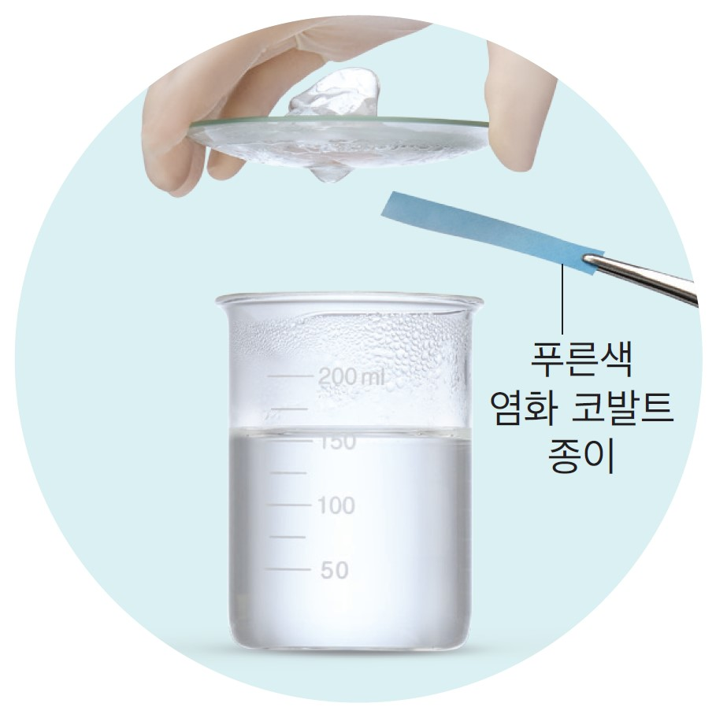
비커에 든 물과 시계 접시 아랫면에 생긴 액체 방울에 푸른색 염화 코발트 종이를 각각 대고 색 변화를 관찰해 보자.
Q. 푸른색 염화 코발트 종이의 색은 어떻게 변하는가?
푸른색 염화 코발트 종이는 모두 붉게 변한다.
과정 2의 결과를 바탕으로, 시계 접시 아랫면에 생긴 액체는 어떻게 생성되었는지 토의하여 정리해 보자.
비커에 든 물이 증발하여 수증기가 되고, 차가운 시계 접시 아랫면에서 수증기가 다시 물로 변한 것이다.
교과서 125쪽
고체가 액체로 변하는 현상
액체가 고체로 변하는 현상
🔎 융해와 응고의 예
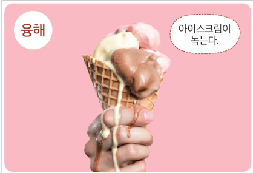
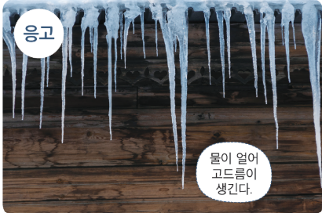
교과서 125쪽
액체가 기체로 변하는 현상
기체가 액체로 변하는 현상
🔎 기화와 액화의 예
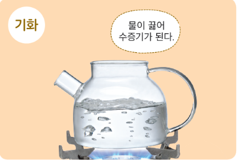
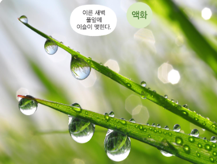
교과서 126쪽
투명한 유리컵에 드라이아이스를 넣는다.
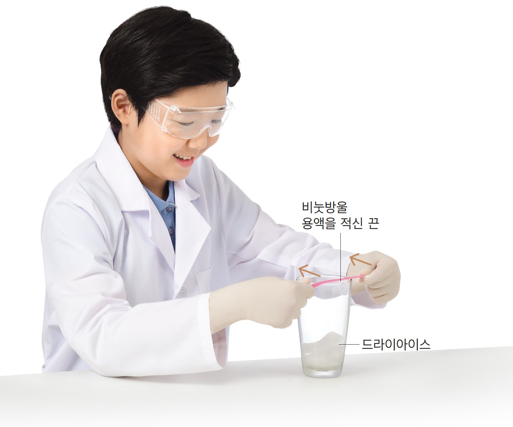
운동화 끈에 비눗방울 용액을 적신 후 양손으로 끈을 팽팽하게 잡고, 1의 컵 입구 위를 천천히 스쳐 지나가면서 비누막을 만든다.
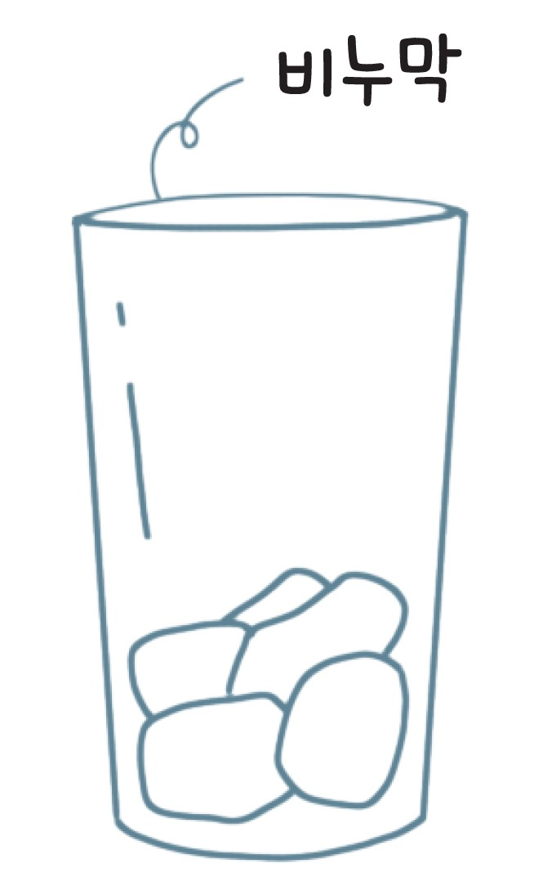
시간이 지남에 따라 컵 입구에 생긴 비누막이 어떻게 달라지는지 관찰해 보자.
🌱 관찰 결과를 글과 그림으로 정리해 보면?
비누막이 점점 부풀어 올라 크기가 커진다.
정리한 내용을 바탕으로 하여 드라이아이스의 상태가 어떻게 변하는지 설명해 보자.
드라이아이스가 녹지 않고 비누막의 크기가 커진 것으로 보아, 고체 상태의 드라이아이스가 기체 상태로 변했다.
교과서 126~127쪽
고체가 기체로 변하거나, 기체가 고체로 변하는 현상
🔎 승화의 예
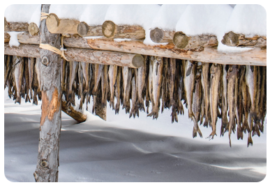
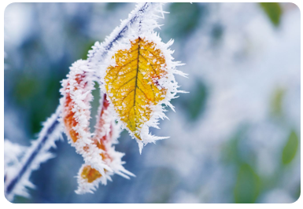
교과서 127쪽
물질은 상태에 따라 고체, 액체, 기체로 구분할 수 있고, 한 가지 상태로만 존재하는 것이 아니라 다른 상태로 변할 수 있다.
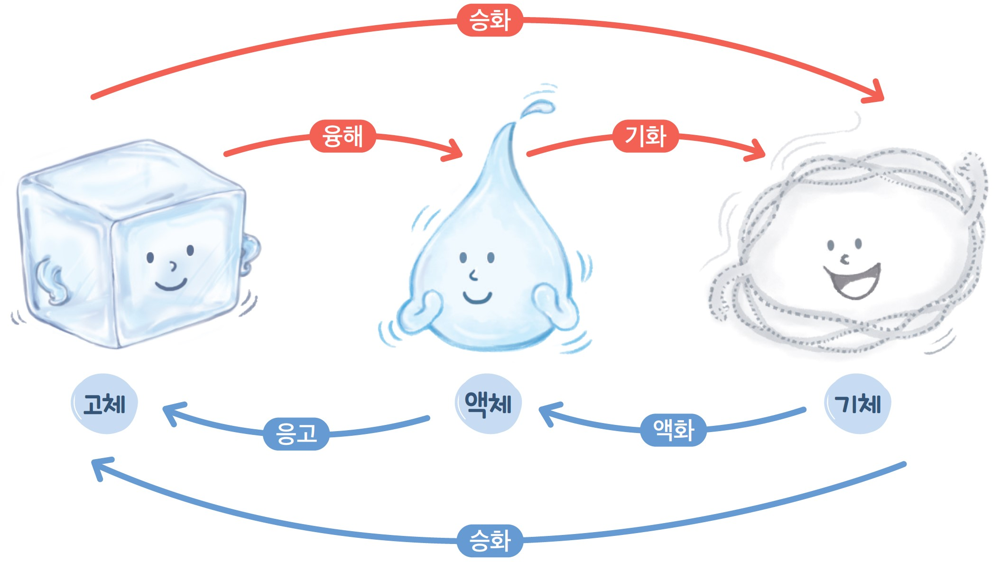
교과서 127쪽
1 문장을 완성해 보자.
고체가 액체로 변하는 현상을 융해 , 액체가 기체 (으)로 변하는 현상을 기화라고 한다.
2 문장이 옳으면 O, 옳지 않으면 X를 선택해 보자.
고체 상태에서 기체 상태로 변하려면 반드시 액체 상태를 거쳐야 한다.
3 탐구 능력 | 추운 겨울 밖에 있다가 따뜻한 실내에 들어가면 갑자기 안경이 뿌옇게 변하는 까닭을 상태 변화와 관련지어 설명해 보자.
공기 중의 수증기가 차가운 안경 표면에서 액화하여 물방울로 맺히기 때문이다.
교과서 127쪽
교과서 127쪽